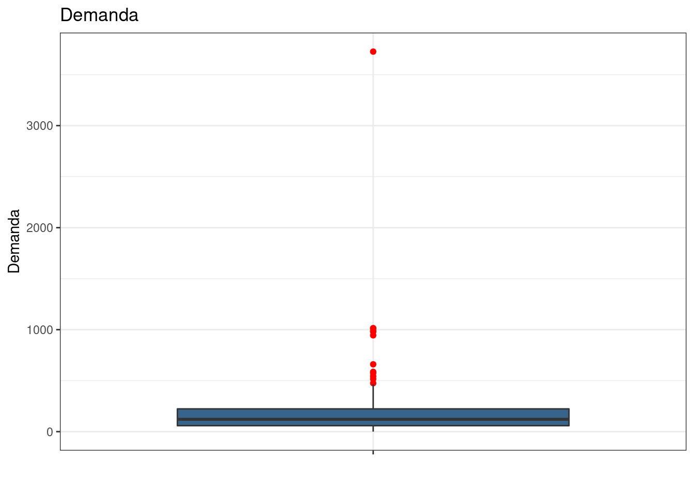

Demanda de estoque do Grupo Bimbo
Carlos Virgílio Beltrão Lessa
30 de janeiro de 2021
1 Objetivo
Prever a demanda de um produto para uma determinada semana, em uma loja específica.
Grupo Bimbo, líder global na indústria de panificação e um importante player em lanches, patrocinou uma competição premiada no Kaggle para reduzir suas perdas com devoluções e ao mesmo manter supridas com seus produtos as prateleiras de seus clientes. Grupo Bimbo Inventory Demand
Os pães do tipo tortilha da marca Rap10 conhecida no Brasil são produtos do Grupo Bimbo
2 Avaliação
A métrica para essa competição é Raiz Quadrada do Erro Logarítmico Médio Quadrático - RMSLE.
RMSLE é calculado com a seguinte fórmula: \[ \epsilon = \sqrt {\frac{1}{n} \sum_{i=1}^n (\log(p_i + 1) - \log(a_i+1))^2} \] Onde:
\(\epsilon\) é o valor RMSLE (score)
\(\\n\) é o número total de observações
\(\\p_i\) é a predição da demanda, e
\(\\a_i\) é a demanda real para \(\\i\).
\(\log(x)\) é o logaritmo natural de \(\\x\)
2.1 Arquivo a ser submetido
O dataset a ser submetido deverá ser composto por duas variáveis: id e Demanda_uni_equi. O id corresponde à variável id no dataset de teste. O arquivo deve conter um cabeçalho e ter o seguinte formato:
id,Demanda_uni_equil
0,1
1,0
2,500
3,100
etc.3 Dados
O conjunto de dados é formado por 9 semanas de transações de vendas no México. Caminhões entregam produtos aos vendedores todas as semanas.
A estrutura dos dados de treino é de 11 variáveis e 74 milhões de observações.
Cada transação consiste em vendas e devoluções. Devoluções são os produtos não vendidos e vencidos. A demanda por um produto em uma determinada semana é definida pelas vendas desta semana subtraídas pelo retorno da próxima semana.
3.1 Notas:
- Pode haver produtos em teste que não existem em treino. Esse é o comportamento esperado dos dados de estoque, uma vez que novos produtos estão sendo vendidos o tempo todo. O modelo deve ser capaz de acomodar isso.
- Existem Cliente_IDs duplicados no cliente_tabla, o que significa que um Cliente_ID pode ter vários NombreCliente que são muito semelhantes. Isso se deve ao fato do NombreCliente ter ruídos e não estar padronizado nos dados brutos, portanto, é necessário decidir como limpar e usar essas informações.
- A demanda ajustada (Demanda_uni_equil) é sempre> = 0, pois a demanda deve ser 0 ou um valor positivo. A razão porque Venta_uni_hoy - Dev_uni_proxima pode ter valores negativos é que os registros de retorno às vezes perduram por algumas semanas.
3.2 Descrição dos arquivos
- train.csv – dados de treino
- test.csv – dados de teste
- sample_submission.csv – arquivo exemplo de envio no formato correto
- cliente_tabla.csv - nomes de clientes (pode ser associado por Cliente_ID)
- producto_tabla.csv - nomes de produtos (pode ser associado por Producto_ID)
- town_state.csv - cidade e estado (pode ser associado por Agencia_ID)
3.3 Dicionário de dados
| Variável | Descrição |
|---|---|
| Semana | Número da semana (de quinta a quarta) |
| Agencia_ID | ID do centro de distribuição |
| Canal_ID | ID do canal de vendas |
| Ruta_SAK | ID da rota (várias rotas = Centro de distribuição) |
| Cliente_ID | ID do cliente |
| Producto_ID | ID do produto |
| Venta_uni_hoy | Unidades de vendas esta semana (inteiro) |
| Venta_hoy | Vendas esta semana (unidade: pesos) |
| Dev_uni_proxima | Unidades devolvidas na próxima semana (inteiro) |
| Dev_proxima | Valores devolvidos na próxima semana (unidade: pesos) |
| Demanda_uni_equil | Demanda ajustada (inteiro) - variável alvo |
3.4 Diferenças no dicionário de dados de teste
| Variável | Descrição |
|---|---|
| ID | Variável adicional para identificar a previsão (inteiro) |
| Venta_uni_hoy | Não existe |
| Venta_hoy | Não existe |
| Dev_uni_proxima | Não existe |
| Dev_proxima | Não existe |
| Demanda_uni_equil | Não existe - variável alvo |
3.5 Dados em outros datasets
| Variável | Descrição |
|---|---|
| Town | Código e nome da cidade (em town_state.csv) |
| State | Nome do estado (em town_state.csv) |
| NombreCliente | Nome do cliente (em cliente_tabla.csv) |
| NombreProducto | Nome do produto (em producto_tabla.csv) |
4 Pacotes necessários
# Manipulação de dados
library(data.table)
library(dplyr)
library(stringr)
library(DT)
# Gráficos
library(ggplot2)
library(treemap)
# Tabelas
library(kableExtra)5 Carga dos dados
Os datasets são grandes, então usaremos fread do pacote data.table.
As variáveis Agencia_ID, Canal_ID, Ruta_SAK, Cliente_ID e Producto_ID são categóricas, porém estão como inteiros, o que é inadequado para pacotes gráficos e a maioria delas tem grande quantidade de valores únicos, então serão carregadas como string.
# Carrega o dataset de treino.
system.time(treino <- fread("train.csv",na.strings=c("","NA"), nThread = 16,
select = c("Semana", "Agencia_ID", "Canal_ID",
"Ruta_SAK", "Cliente_ID", "Producto_ID",
"Venta_uni_hoy","Venta_hoy",
"Dev_uni_proxima", "Dev_proxima",
"Demanda_uni_equil"),
colClasses = c(Semana = "numeric",
Agencia_ID = "character",
Canal_ID = "character",
Ruta_SAK = "character",
Cliente_ID = "character",
Producto_ID = "character",
Venta_uni_hoy = "numeric",
Venta_hoy = "numeric",
Dev_uni_proxima = "numeric",
Dev_proxima = "numeric",
Demanda_uni_equil = "numeric")))## user system elapsed
## 45.630 1.834 16.753# Carrega o dataset de teste.
system.time(teste <- fread("test.csv", na.strings=c("","NA"), nThread = 16,
select = c("id", "Semana", "Agencia_ID", "Canal_ID",
"Ruta_SAK", "Cliente_ID", "Producto_ID"),
colClasses = c(id = "character",
Semana = "numeric",
Agencia_ID = "character",
Canal_ID = "character",
Ruta_SAK = "character",
Cliente_ID = "character",
Producto_ID = "character")))## user system elapsed
## 10.754 0.223 7.275# Carrega o cadastro de clientes.
clientes <- fread("cliente_tabla.csv", na.strings=c("","NA"), nThread = 16,
encoding = "UTF-8",select = c("Cliente_ID","NombreCliente"),
colClasses = c(Cliente_ID = "character",
NombreCliente = "character"))
# Carrega o cadastro de produtos.
produtos <- fread("producto_tabla.csv", na.strings=c("","NA"), nThread = 16,
encoding = "UTF-8",select = c("Producto_ID","NombreProducto"),
colClasses = c(Producto_ID = "character",
NombreProducto = "character"))
# Carrega o cadastro de agencias, cidadese e estados.
town_state <- fread("town_state.csv", na.strings=c("","NA"), nThread = 16,
encoding = "UTF-8",select = c("Agencia_ID","Town","State"),
colClasses = c(Agencia_ID = "character",
Town = "character",
State = "character"))5.1 Amostra com 50 mil observações
Utilizaremos amostra porque o conjunto de dados é muito grande. A geração de gráficos ficará mais rápida.
treino_sample <- sample_n(treino, 5e4)6 Datasets auxiliares
Criaremos datasets com agregações e sumarizações para auxiliar na compreensão dos dados.
6.1 Top 100 Centros de distribuição
system.time(agencia_t100 <-
treino %>%
group_by(Agencia_ID) %>%
summarise(Unidade = sum(Venta_uni_hoy),
Valor = sum(Venta_hoy),
UnidadeDevolv = sum(Dev_uni_proxima)) %>%
mutate(TaxaDevolv = UnidadeDevolv / (Unidade + UnidadeDevolv)) %>%
arrange(desc(Valor)) %>%
inner_join(town_state, by="Agencia_ID"))## user system elapsed
## 1.695 0.516 2.213agencia_t100 <- agencia_t100[1:100, ]6.2 Canais de vendas
# Distribuição por canal
system.time(canal <-
treino %>%
group_by(Canal_ID) %>%
summarise(Unidade = sum(Venta_uni_hoy),
Valor = sum(Venta_hoy),
UnidadeDevolv = sum(Dev_uni_proxima)) %>%
mutate(TaxaDevolv = UnidadeDevolv / (Unidade + UnidadeDevolv)) %>%
arrange(desc(Valor)))## user system elapsed
## 1.589 0.620 2.2106.3 Top 100 Rotas
# Distribuição por rota
system.time(rota_t100 <-
treino %>%
group_by(Ruta_SAK) %>%
summarise(Unidade = sum(Venta_uni_hoy),
Valor = sum(Venta_hoy),
UnidadeDevolv = sum(Dev_uni_proxima)) %>%
mutate(TaxaDevolv = UnidadeDevolv / (Unidade + UnidadeDevolv)) %>%
arrange(desc(Valor)))## user system elapsed
## 1.645 0.625 2.270rota_t100 <- rota_t100[1:100, ]6.4 Top 100 Clientes
# Top 100 Clientes
system.time(cliente_t100 <-
treino %>%
group_by(Cliente_ID) %>%
summarise(Unidade = sum(Venta_uni_hoy),
Valor = sum(Venta_hoy),
UnidadeDevolv = sum(Dev_uni_proxima)) %>%
mutate(TaxaDevolv = UnidadeDevolv / (Unidade + UnidadeDevolv)) %>%
inner_join(clientes, by="Cliente_ID") %>% arrange(desc(Valor)))## user system elapsed
## 13.909 0.239 14.149cliente_t100 <- cliente_t100[1:100, ]6.5 Top 100 Produtos
# Top 100 Produtos
system.time(produto_t100 <- treino %>% group_by(Producto_ID) %>%
summarise(Unidade = sum(Venta_uni_hoy),
Valor = sum(Venta_hoy),
UnidadeDevolv = sum(Dev_uni_proxima)) %>%
mutate(TaxaDevolv = UnidadeDevolv / (Unidade + UnidadeDevolv)) %>%
inner_join(produtos, by="Producto_ID") %>%
arrange(desc(Valor)))## user system elapsed
## 2.712 0.425 3.136produto_t100 <- produto_t100[1:100, ]6.6 Marcas
Em um exame preliminar na variável NombreProducto percebemos existir um padrão que indicam sua marca. O padrão é composto por duas ou três letras maiúsculas precedendo o código do produto repetido nos últimos caracteres de sua descrição.
# Criar nova variável com as marcas constantes na variável NombreProducto
# Função para extrair o final da string, composta por marca (com duas ou três
# letras), um espaço em branco e números corespondentes ao código de produto.
substrFinal <- function(x){
substr(x, nchar(x)-nchar(str_extract(x,"\\b\\d+$"))-3, nchar(x))
}
# Cria a variável marca
produtos$Marca <- str_extract(substrFinal(produtos$NombreProducto),"[A-Z]+")
# Existe um produto denominado "NO IDENTIFICADO", quando extraimos as últimas
# três letras, seguindo o padrão das demais, ficou como a marca "ADO".
# Outros produtos com valores ausentes serão atribuídos a essa marca fictícia.
produtos$Marca[is.na(produtos$Marca)] <- "ADO"
# Distribuição por marcas
marcas <- treino %>% inner_join(produtos, by="Producto_ID") %>%
group_by(Marca) %>%
summarise(Unidade = sum(Venta_uni_hoy),
Valor = sum(Venta_hoy),
UnidadeDevolv = sum(Dev_uni_proxima)) %>%
mutate(TaxaDevolv = UnidadeDevolv / (Unidade + UnidadeDevolv)) %>%
arrange(desc(Valor))7 Amostras dos dados
Os datasets originais serão exibidos por amostras aleatórias com 100 observações. Os datasets auxiliares exibirão 100 observações em ordem decrescente do valor total de vendas.
O dataset de treino tem onze variáveis com nomes longos, então será apresentado com abreviaturas para evitar barra de rolagem horizontal na página.
7.1 Treino
# Exibe amostra
# Condensa os nomes das variáveis para melhor exibir na página
names_cond <- c('Sem','AgID','ChID','Ruta','CliID','ProdID','VenUni',
'VenHoy','DevUni','DevProx','DemEq')
datatable(sample_n(treino, 100) %>% arrange(Semana),
class="table-condensed",
colnames = names_cond,
options = list(pageLength = 10,
lengthMenu = c(10, 20, 50, 100)
))7.2 Teste
datatable(sample_n(teste, 100) %>% arrange(Semana),
class="table-condensed",
options = list(pageLength = 10,
lengthMenu = c(10, 20, 50, 100)
))7.3 Centro de distribuição
datatable(sample_n(town_state, 100) %>% arrange(Agencia_ID),
class="table-condensed",
options = list(pageLength = 10,
lengthMenu = c(10, 20)
))7.4 Clientes
datatable(sample_n(clientes, 100) %>% arrange(Cliente_ID),
class="table-condensed",
options = list(pageLength = 10,
lengthMenu = c(10, 20, 50, 100)
))7.5 Produtos
datatable(sample_n(produtos, 100) %>% arrange(Producto_ID),
class="table-condensed",
options = list(pageLength = 10,
lengthMenu = c(10, 20, 50, 100)
))7.6 Top 100 Centros de Distribuição
datatable(agencia_t100[, c("Agencia_ID", "Town", "State", "Valor")] %>%
arrange(desc(Valor)), class="table-condensed",
options = list(pageLength = 10,
lengthMenu = c(10, 20, 50, 100)
)) %>% formatRound(columns = c("Valor"), digits = 2)7.7 Canais de vendas
datatable(canal[, c("Canal_ID", "Valor")] %>%
arrange(desc(Valor)), class="table-condensed",
options = list(pageLength = 10,
lengthMenu = c(10, 20, 50, 100)
)) %>% formatRound(columns = c("Valor"), digits = 2)7.8 Top 100 Rotas
datatable(rota_t100[, c("Ruta_SAK", "Valor")] %>%
arrange(desc(Valor)), class="table-condensed",
options = list(pageLength = 10,
lengthMenu = c(10, 20, 50, 100)
)) %>% formatRound(columns = c("Valor"), digits = 2)7.9 Top 100 Clientes
datatable(cliente_t100[, c("Cliente_ID","NombreCliente","Valor")] %>%
arrange(desc(Valor)), class="table-condensed",
options = list(pageLength = 10,
lengthMenu = c(10, 20, 50, 100)
)) %>% formatRound(columns = c("Valor"), digits = 2)7.10 Top 100 Produtos
datatable(produto_t100[, c("Producto_ID", "NombreProducto", "Valor")] %>%
arrange(desc(Valor)), class="table-condensed",
options = list(pageLength = 10,
lengthMenu = c(10, 20, 50, 100)
)) %>% formatRound(columns = c("Valor"), digits = 2)7.11 Marcas
datatable(marcas[, c("Marca", "Valor")] %>%
arrange(desc(Valor)), class="table-condensed",
options = list(pageLength = 10,
lengthMenu = c(10, 20, 50, 100)
)) %>% formatRound(columns = c("Valor"), digits = 2)8 Análise exploratória
8.1 Verificar a estrutura e resumo estatístico
- Verificar dados missing.
- Verificar dados únicos
- Verificar a estrutura.
- Verificar resumo estatístico.
- Exibir amostra dos dados.
# Verifica o conteúdo do dataset
# Verifica dados missing
colSums(is.na(treino))## Semana Agencia_ID Canal_ID Ruta_SAK
## 0 0 0 0
## Cliente_ID Producto_ID Venta_uni_hoy Venta_hoy
## 0 0 0 0
## Dev_uni_proxima Dev_proxima Demanda_uni_equil
## 0 0 0# Verifica dados únicos
sapply(treino, function(x) length(unique(x)))## Semana Agencia_ID Canal_ID Ruta_SAK
## 7 552 9 3603
## Cliente_ID Producto_ID Venta_uni_hoy Venta_hoy
## 880604 1799 2116 78140
## Dev_uni_proxima Dev_proxima Demanda_uni_equil
## 558 14707 2091# Verifica a estrutura e o resumo dos dados
str(treino)## Classes 'data.table' and 'data.frame': 74180464 obs. of 11 variables:
## $ Semana : num 3 3 3 3 3 3 3 3 3 3 ...
## $ Agencia_ID : chr "1110" "1110" "1110" "1110" ...
## $ Canal_ID : chr "7" "7" "7" "7" ...
## $ Ruta_SAK : chr "3301" "3301" "3301" "3301" ...
## $ Cliente_ID : chr "15766" "15766" "15766" "15766" ...
## $ Producto_ID : chr "1212" "1216" "1238" "1240" ...
## $ Venta_uni_hoy : num 3 4 4 4 3 5 3 6 4 6 ...
## $ Venta_hoy : num 25.1 33.5 39.3 33.5 22.9 ...
## $ Dev_uni_proxima : num 0 0 0 0 0 0 0 0 0 0 ...
## $ Dev_proxima : num 0 0 0 0 0 0 0 0 0 0 ...
## $ Demanda_uni_equil: num 3 4 4 4 3 5 3 6 4 6 ...
## - attr(*, ".internal.selfref")=<externalptr>summary(treino)## Semana Agencia_ID Canal_ID Ruta_SAK
## Min. :3.00 Length:74180464 Length:74180464 Length:74180464
## 1st Qu.:4.00 Class :character Class :character Class :character
## Median :6.00 Mode :character Mode :character Mode :character
## Mean :5.95
## 3rd Qu.:8.00
## Max. :9.00
## Cliente_ID Producto_ID Venta_uni_hoy Venta_hoy
## Length:74180464 Length:74180464 Min. : 0.00 Min. : 0.0
## Class :character Class :character 1st Qu.: 2.00 1st Qu.: 16.8
## Mode :character Mode :character Median : 3.00 Median : 30.0
## Mean : 7.31 Mean : 68.5
## 3rd Qu.: 7.00 3rd Qu.: 56.1
## Max. :7200.00 Max. :647360.0
## Dev_uni_proxima Dev_proxima Demanda_uni_equil
## Min. :0.0e+00 Min. : 0.00 Min. : 0.000
## 1st Qu.:0.0e+00 1st Qu.: 0.00 1st Qu.: 2.000
## Median :0.0e+00 Median : 0.00 Median : 3.000
## Mean :1.3e-01 Mean : 1.24 Mean : 7.225
## 3rd Qu.:0.0e+00 3rd Qu.: 0.00 3rd Qu.: 6.000
## Max. :2.5e+05 Max. :130760.00 Max. :5000.0008.2 Variável alvo (Demanda_uni_equil)
Demanda_uni_equil tem muitos outliers. Podemos constatar pela discrepância entre os valores do terceiro quartil (6) e máximo (5000), além da média (7.225) ser superior ao terceiro quartil. Utilizaremos boxplots para verificar o ponto de corte ideal para gerar histogramas. Serão dois histogramas, um com os dados sem outliers e outro com parte da cauda.
# Verifica a distribuição dos dados
treino_sample %>%
count(Demanda_uni_equil) %>%
ggplot(aes(x = "", y = Demanda_uni_equil)) +
geom_boxplot(fill = "steelblue4", outlier.colour="red") +
ggtitle("Demanda") +
xlab("")+ ylab("Demanda") + theme_bw()
# Verifica a distribuição minimizando os outliers
treino_sample %>%
count(Demanda_uni_equil) %>%
filter(Demanda_uni_equil < 12) %>%
ggplot(aes(x = "", y = Demanda_uni_equil)) +
geom_boxplot(fill = "steelblue4", outlier.colour="red") +
ggtitle("Demanda sem outliers") +
xlab("")+ ylab("Demanda") + theme_bw()# Histograma sem outliers
treino_sample %>%
count(Demanda_uni_equil) %>%
filter(Demanda_uni_equil < 12) %>%
ggplot(aes(x = Demanda_uni_equil, y = n)) +
geom_bar(stat = "identity", fill = "steelblue4") +
ggtitle("Distribuição da Demanda") +
theme_bw()# Histograma parcial da cauda
treino_sample %>%
count(Demanda_uni_equil) %>%
filter(Demanda_uni_equil >= 12 & Demanda_uni_equil < 100) %>%
ggplot(aes(x = Demanda_uni_equil, y = n)) +
geom_bar(stat = "identity", fill = "steelblue4") +
ggtitle("Distribuição da Demanda - cauda") +
theme_bw()Há indicação de venda em lotes, por exemplo: 12, 15, 20, 30, 40, 60 e 80.
8.3 Semanas
# Distribuição por Semana
treino_sample %>%
count(Semana) %>%
ggplot(aes(x = Semana, y = n)) +
geom_bar(stat = "identity", fill = "steelblue4") +
ggtitle("Distribuição por Semana") +
theme_bw()Não há variação significativa entre as semanas.
8.4 Treemaps
Criaremos treemaps com variáveis preditoras considerando o volume de vendas em valores. A taxa de devolução será indicada pela tonalidade da cor. Quanto mais escura, pior a taxa.
8.4.1 Top 100 Centros de Distribuição
# Treemap dos top 100 centros
treemap(agencia_t100,index=c("Town"), vSize="Valor", vColor="TaxaDevolv",
palette=c("white","white","steelblue4"), type="value",
title.legend="Unidades devolvidas %",
title="Top 100 Centros de Distribuição")8.4.2 Canais de Vendas
# Treemap dos canais
treemap(canal,
index=c("Canal_ID"), vSize="Valor", vColor="TaxaDevolv",
palette=c("white","white","steelblue4"), type="value",
title.legend="Unidades devolvidas %",
title="Distribuição por canal")8.4.3 Top 100 Rotas
# Treemap das rotas
treemap(rota_t100,
index=c("Ruta_SAK"), vSize="Valor", vColor="TaxaDevolv",
palette=c("white","white","steelblue4"), type="value",
title.legend="Unidades devolvidas %",
title="Distribuição por rota")
8.4.4 Top 100 Clientes
# Treemap dos top 100 clientes
treemap(cliente_t100, index=c("NombreCliente"), vSize="Valor", vColor="TaxaDevolv",
palette=c("white","white","steelblue4"), type="value",
title.legend="Unidades devolvidas %",
title="Top 100 Clientes")8.4.5 Top 100 Produtos
# Treemap dos top 100 produtos
treemap(produto_t100, index=c("NombreProducto"), vSize="Valor", vColor="TaxaDevolv",
palette=c("white","white","steelblue4"), type="value",
title.legend="Unidades devolvidas %",
title="Top 100 Produtos")
8.4.6 Top 10 Marcas
# Treemap das top 10 marcas
treemap(marcas[1:10,], index=c("Marca"), vSize="Valor", vColor="TaxaDevolv",
palette=c("white","white","steelblue4"), type="value",
title.legend="Unidades devolvidas %",
title="Top 10 Marcas")8.4.7 Notas
A taxa de unidades devolvidas aparenta estar mais relacionada a Rotas(0.14%) e Clientes(0.10%) que Produtos (0.04%), Canais (0.06%) e Centros(0.07%).
Os canais 5 e 8 têm taxas discrepantes em relação aos demais.
A rota 3001 se mostra a maior responsável por Rotas terem a maior taxa de devolução.
O cliente Puebla Remision é responsável por quase a metade das vendas e a taxa de devolução não é baixa. Jalisco Remision é o quarto em volume de vendas e tem taxa de devolução elevada.
Três entre os quatro maiores clientes tem a palavra Remision precedida do nome de uma cidade no México. Uma das traduções desta palavra é encaminhamento, então, esses três grandes clientes podem ser entrepostos comerciais e não lojas varejistas finais.
9 Engenharia de atributos
9.1 Remoção de variáveis e dataframes
As variáveis Venta_uni_hoy, Venta_hoy, Dev_uni_proxima e Dev_proxima não existem no dataset de teste, então não serão úteis para machine learning.
Elas foram carregadas inicialmente por suas importâncias na análise exploratória. A geração dos treemaps, por exemplo, com base em volume de vendas em valores e taxa de devolução, foram construídos por sumarizações obtidas a partir destas variáveis.
Apenas os dataframes de treino e teste serão preservados, os demais serão removidos para poupar memória.
# Remoção de variáveis
treino[,c("Venta_uni_hoy","Venta_hoy","Dev_uni_proxima","Dev_proxima")] <- NULL
# Remoção de datasets
rm(agencia_t100,canal,cliente_t100,clientes,produto_t100,produtos,rota_t100,
town_state,treino_sample,marcas)
# Limpa a memória (garbage collection)
gc()## used (Mb) gc trigger (Mb) max used (Mb)
## Ncells 8136603 434.6 25687318 1371.9 25687318 1371.9
## Vcells 670397611 5114.8 1858865391 14182.1 2314453374 17657.99.2 Variáveis categóricas em inteiros
A geração de gráficos na fase de análise exploratória foi facilitada por termos carregados as variáveis Agencia_ID, Canal_ID, Ruta_SAK, Cliente_ID e Producto_ID como texto, porém mais adiante serão transformadas pela função log1p. Primeiramente serão transformadas para inteiros.
# Trasforma variáveis de treino
treino[,c(2,3,4,5,6)] <- lapply(treino[,c(2,3,4,5,6)], as.integer)
# Trasforma variáveis de teste
teste[,c(1,3,4,5,6,7)] <- lapply(teste[,c(1,3,4,5,6,7)], as.integer)9.3 Transformação da variável alvo
A métrica de avaliação dessa competição é Raiz Quadrado do Erro Logarítmico Médio Quadrático, então a transformação de Demanda_uni_equil será feita com a função log1p, que computa o logaritmo do número acrescido de uma unidade.
Por existirem valores zero em Demanda_uni_equil a função log não poderá ser utilizada porque o limite de \(\log(x)\) quando \(x\) se aproxima de \(0+\) é \(-\infty\)).
\[lim_{x \to 0+}ln(x) = -\infty\]
# Transformação da variável alvo com logaritmo do seu valor acrescido de uma
# unidade.
treino$Demanda_uni_equil <- log1p(treino$Demanda_uni_equil)
# Cria variável id no dataset de treino, Demanda_uni_equil no dataset de test
# para que ambos tenham as mesmas variáveis. Também cria a variável tst para
# identificar se os dados são de treino ou de teste.
treino$id <- 0; teste$Demanda_uni_equil <- 0; treino$tst <- 0; teste$tst <- 1
# Agrega os dados de treino da nona semana com os dados de teste em um dataset
# que receberá os dados transformados
trans_treino <- rbind(treino[Semana == 9], teste)9.4 Médias e contagens por variáveis e grupos de variáveis
Criaremos variáveis com médias da variável alvo considerando as variáveis categóricas tanto isoladas quando em grupos. Criaremos também variáveis contendo contagens sob as mesmas regras das médias.
# Calcula a demanda média e a contagem das semanas de 3 a 8 e em seguida junta
# com as semanas 9, 10 e 11.
# Média e contagem por produto e cliente
trans_treino <-
treino[Semana <= 8][, .(MPC = mean(Demanda_uni_equil), CPC = .N),
by = .(Producto_ID, Cliente_ID)] %>%
merge(trans_treino, all.y = TRUE, by = c("Producto_ID", "Cliente_ID"))
# Média e contagem por produto
trans_treino <-
treino[Semana <= 8][, .(MP = mean(Demanda_uni_equil), CP = .N),
by = .(Producto_ID)] %>%
merge(trans_treino, all.y = TRUE, by = c("Producto_ID"))
# Média e contagem por cliente
trans_treino <-
treino[Semana <= 8][, .(MC = mean(Demanda_uni_equil), CC = .N),
by = .(Cliente_ID)] %>%
merge(trans_treino, all.y = TRUE, by = c("Cliente_ID"))
# Média e contagem por produto e rota
trans_treino <-
treino[Semana <= 8][, .(MPR = mean(Demanda_uni_equil), CPR = .N),
by = .(Producto_ID, Ruta_SAK)] %>%
merge(trans_treino, all.y = TRUE, by = c("Producto_ID", "Ruta_SAK"))
# Média e contagem por cliente e rota
trans_treino <-
treino[Semana <= 8][, .(MCR = mean(Demanda_uni_equil), CCR = .N),
by = .(Cliente_ID, Ruta_SAK)] %>%
merge(trans_treino, all.y = TRUE, by = c("Cliente_ID", "Ruta_SAK"))
# Média e contagem por produto e agencia
trans_treino <-
treino[Semana <= 8][, .(MPA = mean(Demanda_uni_equil), CPA = .N),
by = .(Producto_ID, Agencia_ID)] %>%
merge(trans_treino, all.y = TRUE, by = c("Producto_ID", "Agencia_ID"))
# Média e contagem por produto, cliente e agencia
trans_treino <-
treino[Semana <= 8][, .(MPCA = mean(Demanda_uni_equil), CPCA = .N),
by = .(Producto_ID, Cliente_ID, Agencia_ID)] %>%
merge(trans_treino, all.y = TRUE,
by = c("Producto_ID", "Cliente_ID", "Agencia_ID"))9.5 Remove Semana e preenche valores ausentes
# Remove Semana
trans_treino$Semana <- NULL
# Preenche valores ausentes com zero
trans_treino[is.na(trans_treino)] <- 0
# Remoção de datasets
rm(treino,teste)
# Limpa a memória
gc()## used (Mb) gc trigger (Mb) max used (Mb)
## Ncells 1122258 60.0 6733778 359.7 25687318 1371.9
## Vcells 434588665 3315.7 1784574776 13615.3 2314453374 17657.99.6 Aplica log1p a todas variáveis categóricas e de contagens
# Aplica log1p
trans_treino[,c(1,2,3,7,8,10,12,14,16,18)] <-
lapply(trans_treino[,c(1,2,3,7,8,10,12,14,16,18)], log1p)10 Modelos
Utilizaremos quatro modelos ML da plataforma H2O.ai.
10.1 Iniciar o cluster e preparar os datasets
library(h2o)
# Inicia o cluster H2O
h2o.init(nthreads=-1, max_mem_size="40G",ip = "127.0.0.1")##
## H2O is not running yet, starting it now...
##
## Note: In case of errors look at the following log files:
## /tmp/RtmpFs9tcK/file29c539d55017/h2o_carloslessa_started_from_r.out
## /tmp/RtmpFs9tcK/file29c51751931f/h2o_carloslessa_started_from_r.err
##
##
## Starting H2O JVM and connecting: .. Connection successful!
##
## R is connected to the H2O cluster:
## H2O cluster uptime: 1 seconds 148 milliseconds
## H2O cluster timezone: America/Maceio
## H2O data parsing timezone: UTC
## H2O cluster version: 3.32.0.3
## H2O cluster version age: 1 month and 5 days
## H2O cluster name: H2O_started_from_R_carloslessa_oey273
## H2O cluster total nodes: 1
## H2O cluster total memory: 40.00 GB
## H2O cluster total cores: 4
## H2O cluster allowed cores: 4
## H2O cluster healthy: TRUE
## H2O Connection ip: 127.0.0.1
## H2O Connection port: 54321
## H2O Connection proxy: NA
## H2O Internal Security: FALSE
## H2O API Extensions: Amazon S3, XGBoost, Algos, AutoML, Core V3, TargetEncoder, Core V4
## R Version: R version 3.6.3 (2020-02-29)# Limpa o ambiente - apenas no caso do cluster já estar em execução
h2o.removeAll()
# Não exibir a barra de progresso na saída RMarkdown
h2o.no_progress()
# Treino em dataframe H2O
system.time(h2o_treino <- as.h2o(as.data.frame(trans_treino[tst == 0]) %>%
select(-id, -tst)))## user system elapsed
## 143.943 2.922 159.440# Teste em dataframe H2O
system.time(h2o_teste <- as.h2o(as.data.frame(trans_treino[tst == 1]) %>%
select(-Demanda_uni_equil, -id, -tst)))## user system elapsed
## 91.261 1.747 100.307# Identifica a variável alvo e as preditoras
response <- "Demanda_uni_equil"
predictors <- setdiff(names(h2o_treino), response)
# Extrai o id
id <- as.integer(trans_treino[tst == 1]$id)
# Remove trans_treino
rm(trans_treino)
# Limpa a memória
gc()## used (Mb) gc trigger (Mb) max used (Mb)
## Ncells 1323195 70.7 4309619 230.2 25687318 1371.9
## Vcells 98966315 755.1 1142127857 8713.8 2314453374 17657.910.2 Random Forest
Distributed Random Forest (DRF) é uma ferramenta poderosa de classificação e regressão. Quando fornecido um conjunto de dados, o DRF gera uma floresta de árvores, em vez de uma única árvore de classificação ou regressão.1
system.time(model_rf <-
h2o.randomForest(x = predictors,
y = response,
training_frame = h2o_treino,
nfolds = 5,
fold_assignment = "Modulo",
ntrees = 50,
max_depth = 8,
min_rows = 1,
sample_rate = 0.7,
keep_cross_validation_predictions = T,
seed = 1))## user system elapsed
## 2.932 0.122 832.72810.3 Generalized Linear Model
É uma generalização flexível da regressão linear ordinária. GLM estimam modelos de regressão para resultados seguindo distribuições exponenciais. Além da distribuição gaussiana (ou seja, normal), isso inclui as distribuições de Poisson, binomial e gama.2
system.time(model_glm <-
h2o.glm(x = predictors,
y = response,
training_frame = h2o_treino,
nfolds = 5,
fold_assignment = "Modulo",
keep_cross_validation_predictions = T,
seed = 1))## user system elapsed
## 0.251 0.007 19.35310.4 Gradient Boosted
Gradient Boosting Machine é um método de conjunto de aprendizagem progressiva. A heurística orientadora é que bons resultados preditivos podem ser obtidos por meio de aproximações cada vez mais refinadas.3
system.time(model_gbm <-
h2o.gbm(x = predictors,
y = response,
training_frame = h2o_treino,
distribution = "gaussian",
ntrees = 50,
max_depth = 8,
min_rows = 1,
learn_rate = 0.1,
sample_rate = 0.7,
col_sample_rate = 0.9,
nfolds = 5,
fold_assignment = "Modulo",
keep_cross_validation_predictions = T,
seed = 1))## user system elapsed
## 4.119 0.218 1197.91510.5 eXtreme Gradient Boosted
XGBoost constrói muitos modelos sequencialmente, com cada novo modelo tentando corrigir as deficiências do modelo anterior. Cada novo modelo adicionado ao conjunto é uma árvore de decisão. O XGBoost fornece boosting de árvore paralela.4
system.time(model_xgb <-
h2o.xgboost(x = predictors,
y = response,
training_frame = h2o_treino,
distribution = "gaussian",
ntrees = 50,
max_depth = 8,
backend = "cpu",
min_rows = 1,
learn_rate = 0.1,
sample_rate = 0.7,
col_sample_rate = 0.9,
nfolds = 5,
fold_assignment = "Modulo",
keep_cross_validation_predictions = T,
seed = 1))## user system elapsed
## 13.375 0.669 3839.95210.6 Stacked Ensemble (Super Learner)
Algoritmo que agrupa modelos para encontrar a combinação ideal. Recebe como parâmetro uma lista com dois ou mais modelos.5
system.time(model_stck <-
h2o.stackedEnsemble(x = predictors,
y = response,
training_frame = h2o_treino,
metalearner_algorithm = "AUTO",
metalearner_nfolds = 5,
base_models = list(model_rf@model_id,
model_xgb@model_id,
model_gbm@model_id,
model_glm@model_id),
metalearner_fold_assignment = "AUTO",
seed = 1))## user system elapsed
## 0.144 0.004 8.18811 Avaliação dos modelos
11.1 R2 (R ao quadrado)
O valor R2 representa o grau em que o valor previsto e o valor real se movem junto. O valor R2 varia entre 0 e 1, onde 0 representa nenhuma correlação entre o valor previsto e o valor real e 1 representa a correlação completa.
11.2 MSE (erro quadrático médio)
A métrica MSE mede a média dos quadrados dos erros ou desvios. MSE pega as distâncias dos pontos até a linha de regressão (essas distâncias são os “erros”) e as eleva ao quadrado para remover quaisquer sinais negativos. O MSE incorpora tanto a variância quanto o viés da previsão. Quanto menor o MSE, melhor será o desempenho do modelo.
11.3 RMSE (raiz quadrada do erro quadrático médio)
A métrica RMSE avalia quão bem um modelo pode prever um valor contínuo. As unidades RMSE são iguais ao alvo previsto, o que é útil para entender se o tamanho do erro é preocupante ou não. Quanto menor a RMSE, melhor será o desempenho do modelo.
11.4 RMSLE (raiz quadrada do erro logarítmico médio quadrático)
Essa métrica mede a proporção entre os valores reais e os valores previstos e obtém o registro das previsões e dos valores reais. Métrica mais adequada do que RMSE se uma previsão insuficiente for pior que uma previsão excessiva. Métrica utilizada na avaliação da competição, portanto RMSLE é a mais importante para o caso em foco. Quanto menor a RMSLE, melhor será o desempenho do modelo.
Possivelmente o Grupo Bimbo considera pior deixar faltar seus produtos que tê-los devolvidos.
11.5 MAE (erro médio absoluto)
O erro absoluto médio, como próprio nome diz, é uma média dos erros absolutos. As unidades do MAE são iguais às da meta prevista, o que é útil para entender se o tamanho do erro é preocupante ou não. Quanto menor o MAE, melhor é o desempenho do modelo.
11.6 Tabela de performance
# Objetos com os dados de performance de cada modelo
perf_rf <- h2o.performance(model_rf)
perf_glm <- h2o.performance(model_glm)
perf_gbm <- h2o.performance(model_gbm)
perf_xgb <- h2o.performance(model_xgb)
perf_stck <- h2o.performance(model_stck)
# Extrai R2
R2 <- c(h2o.r2(perf_rf),h2o.r2(perf_glm),h2o.r2(perf_gbm),
h2o.r2(perf_xgb),h2o.r2(perf_stck))
# Extrai MSE
MSE <- c(h2o.mse(perf_rf),h2o.mse(perf_glm),h2o.mse(perf_gbm),
h2o.mse(perf_xgb),h2o.mse(perf_stck))
# Extrai RMSE
RMSE <- c(h2o.rmse(perf_rf),h2o.rmse(perf_glm),h2o.rmse(perf_gbm),
h2o.rmse(perf_xgb),h2o.rmse(perf_stck))
# Extrai RMSLE
RMSLE <- c(h2o.rmsle(perf_rf),h2o.rmsle(perf_glm),h2o.rmsle(perf_gbm),
h2o.rmsle(perf_xgb),h2o.rmsle(perf_stck))
# Extrai MAE
MAE <- c(h2o.mae(perf_rf),h2o.mae(perf_glm),h2o.mae(perf_gbm),
h2o.mae(perf_xgb),h2o.mae(perf_stck))
Modelo <- c("Random Forest","Generalized Linear Model","Gradient Boosted",
"eXtreme Gradient Boosting","Stacked Ensemble")
# Tabela de performance
kable(data.frame(Modelo,R2,MSE,RMSE,RMSLE,MAE)) %>%
kable_styling(full_width = F,
bootstrap_options = c("striped","hover","condensed","responsive"))| Modelo | R2 | MSE | RMSE | RMSLE | MAE |
|---|---|---|---|---|---|
| Random Forest | 0.6963559 | 0.2138221 | 0.4624090 | 0.1975503 | 0.3475820 |
| Generalized Linear Model | 0.6228353 | 0.2655944 | 0.5153585 | 0.2137989 | 0.3902025 |
| Gradient Boosted | 0.7152862 | 0.2004916 | 0.4477629 | 0.1917299 | 0.3344079 |
| eXtreme Gradient Boosting | 0.7112733 | 0.2033175 | 0.4509074 | 0.1918409 | 0.3365273 |
| Stacked Ensemble | 0.7149667 | 0.2062378 | 0.4541342 | 0.1913701 | 0.3369070 |
12 Previsão e submissão ao Kaggle
12.1 Previsão e geração dos arquivos
A função inversa de log1p é expm1 - exponencial de um número decrescido de uma unidade. Esta função será utilizada para transformar os valores previstos da variável alvo na mesma escala de Demanda_uni_equil nos dados de treino.
# Random Forest
system.time(predic_rf <- h2o.predict(model_rf, h2o_teste))## user system elapsed
## 0.086 0.001 14.181prev_rf <- as.data.frame(predic_rf)
prev_rf <- expm1(as.numeric(prev_rf$predict))
prev_rf[prev_rf < 0] <- 0
prev_rf <- data.frame(id = id, Demanda_uni_equil = prev_rf)
fwrite(prev_rf,"H2O_RandomForest.csv")
# GBM
system.time(predic_gbm <- h2o.predict(model_gbm, h2o_teste))## user system elapsed
## 0.083 0.005 14.163prev_gbm <- as.data.frame(predic_gbm)
prev_gbm <- expm1(as.numeric(prev_gbm$predict))
prev_gbm[prev_gbm < 0] <- 0
prev_gbm <- data.frame(id = id, Demanda_uni_equil = prev_gbm)
fwrite(prev_gbm,"H2O_GradientBoosted.csv")
# GLM
system.time(predic_glm <- h2o.predict(model_glm, h2o_teste))## user system elapsed
## 0.038 0.000 1.061prev_glm <- as.data.frame(predic_glm)
prev_glm <- expm1(as.numeric(prev_glm$predict))
prev_glm[prev_glm < 0] <- 0
prev_glm <- data.frame(id = id, Demanda_uni_equil = prev_glm)
fwrite(prev_glm,"H2O_GeneralizedLinearModel.csv")
# XGB
system.time(predic_xgb <- h2o.predict(model_xgb, h2o_teste))## user system elapsed
## 0.064 0.001 6.123prev_xgb <- as.data.frame(predic_xgb)
prev_xgb <- expm1(as.numeric(prev_xgb$predict))
prev_xgb[prev_xgb < 0] <- 0
prev_xgb <- data.frame(id = id, Demanda_uni_equil = prev_xgb)
fwrite(prev_xgb,"H2O_eXtremeGradientBoosting.csv")
# Stacked Ensemble
system.time(predic_stck <- h2o.predict(model_stck, h2o_teste))## user system elapsed
## 0.116 0.007 33.179prev_stck <- as.data.frame(predic_stck)
prev_stck <- expm1(as.numeric(prev_stck$predict))
prev_stck[prev_stck < 0] <- 0
prev_stck <- data.frame(id = id, Demanda_uni_equil = prev_stck)
fwrite(prev_stck,"H2O_StackedEnsemble.csv")
# Finaliza o cluster H2O
h2o.shutdown(prompt = F)12.2 Resultado da submissão ao Kaggle
13 Conclusão
Nesse trabalho vimos o dilema de negócio entre o desabastecimento e o prazo de validade, a associação da métrica de avaliação dos modelos com o problema de negócio a ser resolvido, join de datasets, extração de informação categórica “oculta” no texto (marcas dos produtos), inferência de vendas em lotes na análise da cauda de um histograma, visualizações do volume de vendas e devoluções sob diversos prismas com os treemaps, a necessidade de gerenciar a memória no ambiente quando trabalhamos com conjuntos de dados maiores e a transformação de variáveis de acordo com a métrica de avaliação do modelo.
Resolvemos um problema de regressão com cinco modelos distintos. Em um trabalho recente - TalkingData AdTracking - Desafio de detecção de fraude - resolvemos um problema de classificação binária, lá falamos mais sobre a H2O.ai e utilizamos métricas de avaliação diferentes das usadas aqui, adequadas para modelos de classificação.
Comparando RMSLE na avaliação local e no Kaggle constatamos praticamente a mesma ordem de classificação, apenas entre o Gradient Boosted e Stacked Ensemble houve a inversão entre o primeiro e o segundo melhor classificado. Essa verificação ressalta a importância da avaliação de modelos e a escolha da métrica adequada para cada caso pelo cientista de dados, pois no mundo “real” não teremos o Kaggle para avaliar nossos modelos.
14 Kaggle Notebooks
Para a construção desse trabalho usamos como inspiração e copiamos parte do código de alguns notebooks.
14.1 Análise exploratória
14.2 Engenharia de atributos
15 Melhorando o resultado
Após a conclusão desse trabalho apliquei o modelo de melhor desempenho (Gradient Boosted) a um conjunto maior de variáveis categóricas, 28 no total. Abaixo estão a imagem do resultado no Kaggle e o código da engenharia de atributos.
15.1 Resultado da submissão ao Kaggle
15.2 Engenharia de atributos
Caso queira reproduzir o modelo é só utilizar o código abaixo e seguir essa publicação a partir do item 10.1 - Iniciar o cluster e preparar os datasets.
# Engenharia de atributos
library(data.table)
library(dplyr)
library(stringr)
system.time(treino <- fread("train.csv",na.strings=c("","NA"), nThread = 16,
select = c("Semana", "Agencia_ID", "Canal_ID",
"Ruta_SAK", "Cliente_ID", "Producto_ID",
"Venta_uni_hoy","Venta_hoy",
"Dev_uni_proxima", "Dev_proxima",
"Demanda_uni_equil"),
colClasses = c(Semana = "numeric",
Agencia_ID = "character",
Canal_ID = "character",
Ruta_SAK = "character",
Cliente_ID = "character",
Producto_ID = "character",
Venta_uni_hoy = "numeric",
Venta_hoy = "numeric",
Dev_uni_proxima = "numeric",
Dev_proxima = "numeric",
Demanda_uni_equil = "numeric")))
system.time(teste <- fread("test.csv", na.strings=c("","NA"), nThread = 16,
select = c("id", "Semana", "Agencia_ID", "Canal_ID",
"Ruta_SAK", "Cliente_ID", "Producto_ID"),
colClasses = c(id = "character",
Semana = "numeric",
Agencia_ID = "character",
Canal_ID = "character",
Ruta_SAK = "character",
Cliente_ID = "character",
Producto_ID = "character")))
produtos <- fread("producto_tabla.csv", na.strings=c("","NA"), nThread = 16,
encoding = "UTF-8",select = c("Producto_ID","NombreProducto"),
colClasses = c(Producto_ID = "character",
NombreProducto = "character"))
# Criar nova variável com as marcas constantes na variável NombreProducto
# Função para extrair o final da string, composta por marca (com duas ou três
# letras), um espaço em branco e números corespondentes ao código de produto.
substrFinal <- function(x){
substr(x, nchar(x)-nchar(str_extract(x,"\\b\\d+$"))-3, nchar(x))
}
# Cria a variável marca
produtos$Marca <- str_extract(substrFinal(produtos$NombreProducto),"[A-Z]+")
# Existe um produto denominado "NO IDENTIFICADO", quando extraimos as últimas
# três letras, seguindo o padrão das demais, ficou como a marca "ADO".
# Outros produtos com valores ausentes serão atribuídos a mesma marca fictícia
produtos$Marca[is.na(produtos$Marca)] <- "ADO"
# Remoção de variáveis
treino[,c("Venta_uni_hoy","Venta_hoy","Dev_uni_proxima","Dev_proxima")] <- NULL
# Trasforma variáveis de treino
treino[,c(2,3,4,5,6)] <- lapply(treino[,c(2,3,4,5,6)], as.integer)
# Trasforma variáveis de teste
teste[,c(1,3,4,5,6,7)] <- lapply(teste[,c(1,3,4,5,6,7)], as.integer)
# Trasforma Producto_ID em inteiros
produtos$Producto_ID <- as.integer(produtos$Producto_ID)
# Transforma Marca em inteiros
produtos$Marca <- as.integer(as.factor(produtos$Marca))
# Acrescenta a variável Marca no dataset de treino
treino <- merge(x = treino, y = produtos[, c("Producto_ID","Marca")],
by = "Producto_ID", all.x = T)
# Acrescenta a variável Marca no dataset de teste
teste <- merge(x = teste, y = produtos[, c("Producto_ID","Marca")],
by = "Producto_ID", all.x = T)
# Transformação da variável alvo com logaritmo do seu valor acrescido de uma
# unidade.
treino$Demanda_uni_equil <- log1p(treino$Demanda_uni_equil)
# Cria variável id no dataset de treino, Demanda_uni_equil no dataset de test
# para que ambos tenham as mesmas variáveis. Também cria a variável tst para
# identificar se os dados são de treino ou de teste.
treino$id <- 0; teste$Demanda_uni_equil <- 0; treino$tst <- 0; teste$tst <- 1
# Agrega os dados de treino da nona semana com os dados de teste em um dataset
# que receberá os dados transformados
trans_treino <- rbind(treino[Semana == 9], teste)
# Calcula a demanda média e a contagem das semanas de 3 a 8 e em seguida junta
# com as semanas 9, 10 e 11.
# Média e contagem por produto e cliente
trans_treino <-
treino[Semana <= 8][, .(MPC = mean(Demanda_uni_equil), CPC = .N),
by = .(Producto_ID, Cliente_ID)] %>%
merge(trans_treino, all.y = TRUE, by = c("Producto_ID", "Cliente_ID"))
# Média e contagem por produto
trans_treino <-
treino[Semana <= 8][, .(MP = mean(Demanda_uni_equil), CP = .N),
by = .(Producto_ID)] %>%
merge(trans_treino, all.y = TRUE, by = c("Producto_ID"))
# Média e contagem por cliente
trans_treino <-
treino[Semana <= 8][, .(MC = mean(Demanda_uni_equil), CC = .N),
by = .(Cliente_ID)] %>%
merge(trans_treino, all.y = TRUE, by = c("Cliente_ID"))
# Média e contagem por produto e rota
trans_treino <-
treino[Semana <= 8][, .(MPR = mean(Demanda_uni_equil), CPR = .N),
by = .(Producto_ID, Ruta_SAK)] %>%
merge(trans_treino, all.y = TRUE, by = c("Producto_ID", "Ruta_SAK"))
# Média e contagem por cliente e rota
trans_treino <-
treino[Semana <= 8][, .(MCR = mean(Demanda_uni_equil), CCR = .N),
by = .(Cliente_ID, Ruta_SAK)] %>%
merge(trans_treino, all.y = TRUE, by = c("Cliente_ID", "Ruta_SAK"))
# Média e contagem por produto e agencia
trans_treino <-
treino[Semana <= 8][, .(MPA = mean(Demanda_uni_equil), CPA = .N),
by = .(Producto_ID, Agencia_ID)] %>%
merge(trans_treino, all.y = TRUE, by = c("Producto_ID", "Agencia_ID"))
# Média e contagem por produto, cliente e agencia
trans_treino <-
treino[Semana <= 8][, .(MPCA = mean(Demanda_uni_equil), CPCA = .N),
by = .(Producto_ID, Cliente_ID, Agencia_ID)] %>%
merge(trans_treino, all.y = TRUE,
by = c("Producto_ID", "Cliente_ID", "Agencia_ID"))
# Média e contagem por produto e marca
trans_treino <-
treino[Semana <= 8][, .(MPM = mean(Demanda_uni_equil), CPM = .N),
by = .(Producto_ID, Marca)] %>%
merge(trans_treino, all.y = TRUE, by = c("Producto_ID", "Marca"))
# Média e contagem por cliente e marca
trans_treino <-
treino[Semana <= 8][, .(MCM = mean(Demanda_uni_equil), CCM = .N),
by = .(Cliente_ID, Marca)] %>%
merge(trans_treino, all.y = TRUE, by = c("Cliente_ID", "Marca"))
# Média e contagem por rota e marca
trans_treino <-
treino[Semana <= 8][, .(MRM = mean(Demanda_uni_equil), CRM = .N),
by = .(Ruta_SAK, Marca)] %>%
merge(trans_treino, all.y = TRUE, by = c("Ruta_SAK", "Marca"))
# Média e contagem por agencia e marca
trans_treino <-
treino[Semana <= 8][, .(MAM = mean(Demanda_uni_equil), CAM = .N),
by = .(Agencia_ID, Marca)] %>%
merge(trans_treino, all.y = TRUE, by = c("Agencia_ID", "Marca"))
str(trans_treino)
# Remove Semana
trans_treino$Semana <- NULL
# Preenche valores ausentes com zero
trans_treino[is.na(trans_treino)] <- 0
# Remoção de datasets
rm(treino,teste,produtos)
# Limpa a memória
gc()
# Reordena as variáveis
var_names <- c("Agencia_ID","Canal_ID","Ruta_SAK","Cliente_ID","Producto_ID",
"Marca","CAM","CRM","CCM","CPM","CPCA","CPA","CCR","CC","CP",
"CPC","CPR","MAM","MRM","MCM","MPM","MPCA","MPA","MCR","MPR",
"MC","MP","MPC","Demanda_uni_equil","id","tst")
trans_treino <- trans_treino[,..var_names]
# Aplica log1p
trans_treino[,1:17] <- lapply(trans_treino[,1:17], log1p)
# Salva o dataset
fwrite(trans_treino,"trans_treino.csv")
Distributed Random Forest (DRF)
https://docs.h2o.ai/h2o/latest-stable/h2o-docs/data-science/drf.html↩︎Generalized Linear Model (GLM) http://docs.h2o.ai/h2o/latest-stable/h2o-docs/data-science/glm.html↩︎
Gradient Boosting Machine (GBM) http://docs.h2o.ai/h2o/latest-stable/h2o-docs/data-science/gbm.html↩︎
XGBoost
https://docs.h2o.ai/h2o/latest-stable/h2o-docs/data-science/xgboost.html↩︎Stacked Ensembles
https://docs.h2o.ai/h2o/latest-stable/h2o-docs/data-science/stacked-ensembles.html↩︎